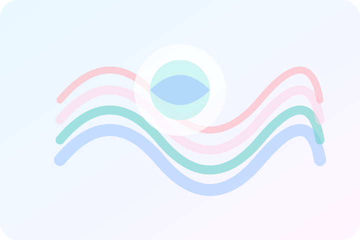

Mindfulness
Respira y regula: guía práctica de respiración diafragmática
Aprende a incorporar micro-pausas en tu día para bajar la activación del sistema nervioso. Incluye audio descargable y hoja de seguimiento.
Leer artículo